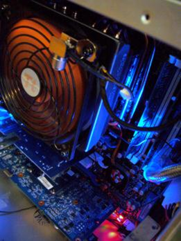
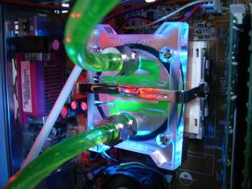
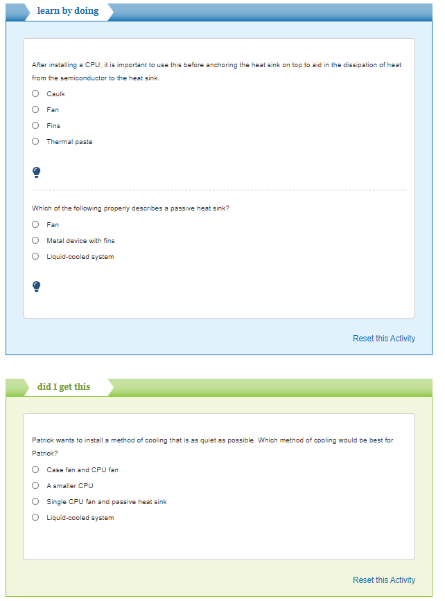

CPU散熱 <<
Previous Next >> haha
散熱討論
最後，我們需要討論在主板上運行CPU時如何冷卻。有幾種選擇。首先，有一個無源散熱器，它是一個帶有散熱片的金屬設備，可以將熱量從處理器散發出去。這是冷卻CPU的非常安靜的方法。但是，大多數現代CPU產生的熱量太多，僅被動散熱片就無法發揮作用。因此，無源散熱器通常與有源散熱器耦合，在有源散熱器上，專用風扇連接到金屬翅片散熱器的頂部，以更有效地吸收熱量。
在將散熱器連接到CPU之前，技術人員應首先在CPU上塗導熱膏，以幫助熱量從CPU傳遞到金屬散熱器。因此，典型的安裝方法是將CPU放入處理器插槽中，對其進行導熱粘貼，然後將翅片散熱器連接到處理器頂部，最後將專用風扇連接到散熱器頂部。導熱膏是使CPU絕緣的相變材料。糊劑在室溫下為固體，但在較高溫度下變為液體。當變成液體時，它消除了空氣，並提供了更好的絕緣性。
另一種選擇是使用液體冷卻系統。這是通過將特殊的液體溶液通過計算機泵送到熱交換器中來進行的，在熱交換器中，風扇在循環之前冷卻液體。這些系統僅用於非常高性能的系統和超頻系統，並且安裝和運行起來可能很複雜。
在選擇冷卻系統時，噪音是一個大問題。迄今為止，無源系統是最安靜的，而涉及風扇的有源系統是最嘈雜的。與較大的CPU風扇相比，液冷系統通常使用較小的風扇來冷卻液體，因此，這是一種安靜的冷卻方法，但成本很高。



CPU散熱 <<
Previous Next >> haha